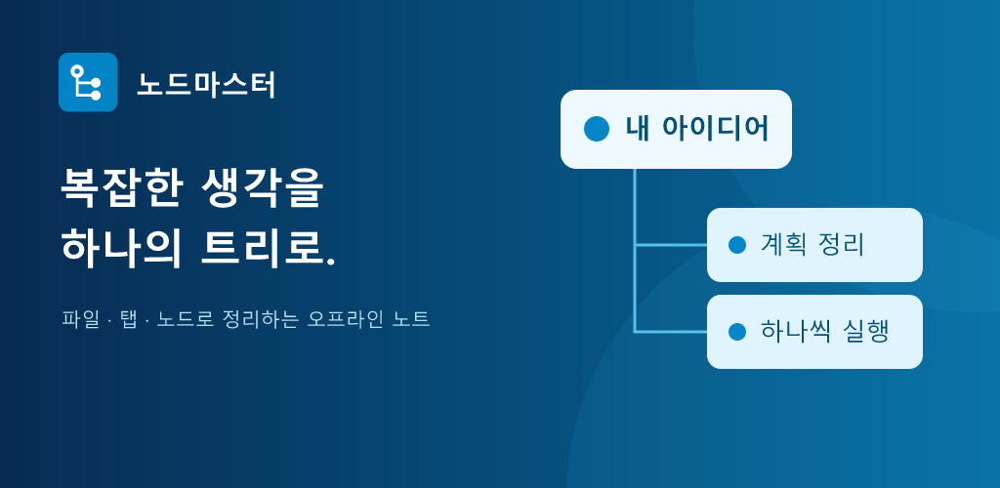

노드마스터 Android
파일·탭·계층형 노드로 메모와 생각을 정리하는 오프라인 작업 공간입니다. 휴대폰부터 펼친 폴드·태블릿까지 화면에 맞춰 사용할 수 있습니다.
Google Play 정식 출시는 준비 중입니다. 테스트 APK는 Google Play 배포본과 서명이 다를 수 있습니다.

파일·탭·계층형 노드로 메모와 생각을 정리하는 오프라인 작업 공간입니다. 휴대폰부터 펼친 폴드·태블릿까지 화면에 맞춰 사용할 수 있습니다.
Google Play 정식 출시는 준비 중입니다. 테스트 APK는 Google Play 배포본과 서명이 다를 수 있습니다.